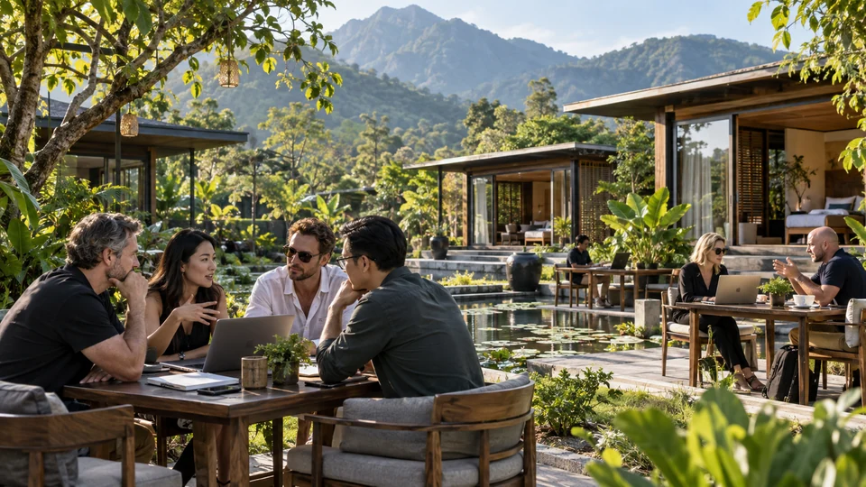
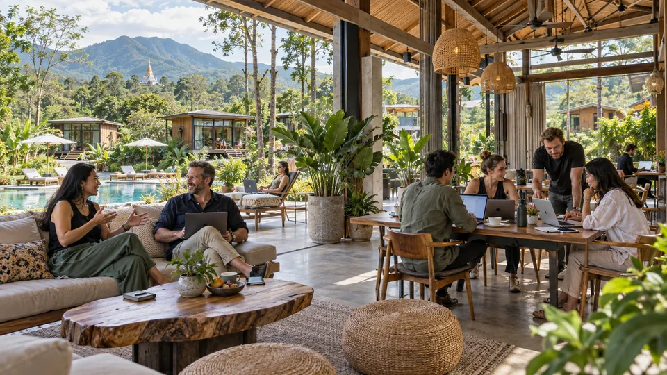
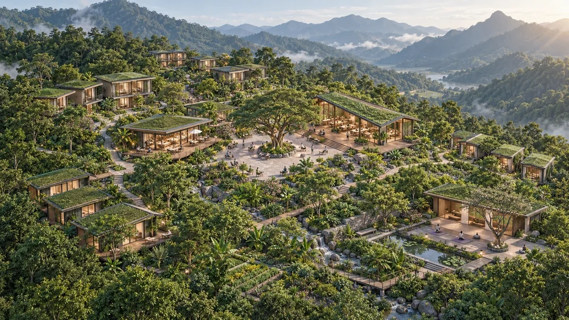

MY LODGE / CHIANG MAI
휴가도, 일도, 만남도.
함께 자유롭게 만나고. 소통하고 협력하고. 도모하고. 스타트 업!

BUSINESS VALLEY / CHIANG MAI
치앙마이의 휴가와 일상함께 자유롭게 만나고.
소통하고 협력하고.
도모하고. 스타트 업!
01 / CHIANG MAI PARK
정원에서 쉬고, 라운지에서 만나고. 휴가와 일이 어우러지는 생활을 그립니다.

함께 자유롭게 만나고. 소통하고 협력하고. 도모하고. 스타트 업!
02 / THE SPACES
숲과 산을 곁에. 나만의 별장부터 함께 즐기는 라운지까지.

별장과 일, 휴식과 만남의 공간 구성을 살펴보세요.
한즈시티 치앙마이에서 공간과 시설을 자세히 살펴보세요.
03 / SIGNATURE SCENES
일과 휴식, 새로운 만남. 내가 바라던 치앙마이의 하루.

생각을 나누는 라운지. 편안한 대화 속에서 새로운 가능성을 그립니다.
햇살과 풀장, 나를 위한 휴식. 서두르지 않는 오후에 여유를 더합니다.


나무 그늘을 따라 걷는 길. 초록 풍경 곁에서 느긋한 하루를 그립니다.

차 한 잔으로 여는 아침. 함께 나누는 식탁에서 하루가 시작됩니다.
먹거리부터 손길이 담긴 소품까지. 가까운 마켓에서 내 취향을 만나는 시간을 그립니다.


함께 즐기는 음악과 편안한 대화. 별장의 밤에 활기를 더합니다.
이미지는 AI 공간·생활 콘셉트입니다. 실제 위치·시설·서비스는 확인 후 안내합니다.